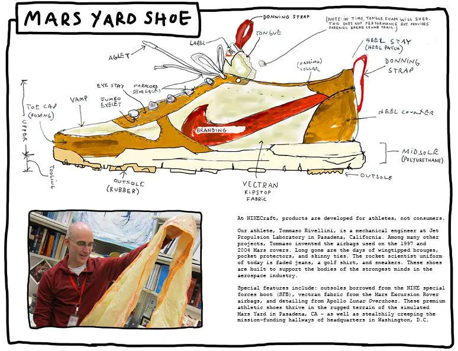
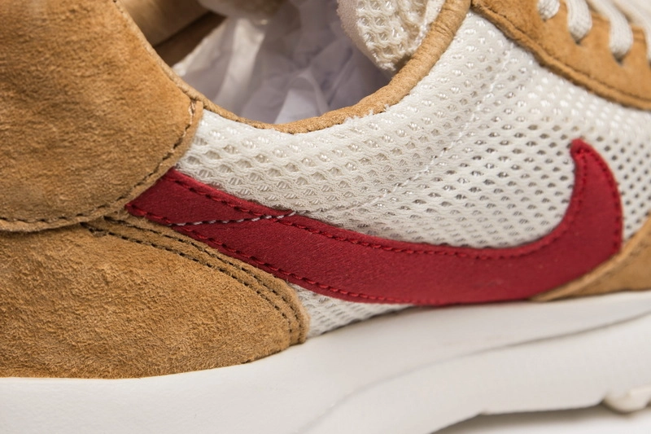

My Favorite Fashion Item
이미지 출처: snkrgirl
내가 가장 좋아하는 패션 아이템은 바로 Nike x Tom Sachs Mars Yard Shoe 2.0이다. 아래는 내가 이 신발을 선택하게 된 이유와 좋아하는 점들에 대한 이야기다.
이 신발을 선택한 이유
이미지 출처: hypebeast
수많은 스니커즈 중에서 이 신발을 고른 가장 큰 이유는, 단순한 디자인이나 유행이 아닌, 그 안에 담긴 철학과 스토리 때문이다. Tom Sachs의 우주 탐사에 대한 관심이 고스란히 담긴 이 제품은 기능성과 예술성을 동시에 담아낸 실험적 작품이라고 느껴졌다.
내가 좋아하는 이유
이미지 출처: hypebeast
나는 이 신발의 소재와 디테일에서 큰 매력을 느낀다. 자연스럽게 낡는 나일론과 스웨이드, 미드솔의 붉은 포인트, 손으로 직접 그린 것 같은 디테일은 공장에서 대량 생산된 신발과는 완전히 다른 감성을 준다. 사용할수록 멋있어진다는 점에서, 단순한 제품이 아닌 나만의 이야기를 담아가는 오브젝트처럼 여겨진다.
코디와 활용

이미지 출처: hypebeast
캐주얼한 팬츠나 조거, 혹은 미니멀한 셋업에도 자연스럽게 녹아들 수 있는 이 신발은, 내가 가진 옷들과도 잘 어울린다. 특히 컬러감이 강하지 않아 어디에나 포인트로 활용하기 좋고, 너무 튀지 않으면서도 존재감 있는 실루엣 덕분에 자신 있게 신을 수 있다.
수업을 마치며
22257035 양영비
디지털 프로그래밍 수업을 통해 HTML과 CSS의 구조를 보다 명확하게 이해할 수 있었고, 디자인 감각을 웹 상에서 구현하는 방법을 배울 수 있어 유익한 시간이었다. 나만의 패션 아이템에 대한 이야기를 코딩으로 표현하는 경험이 특히 흥미로웠다.
© 2025 My Fashion Story. 이미지 출처: hypebeast